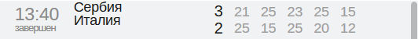
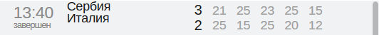

Фанаты "Зенита" поддерживают Кокорина. Но что не так с майкой?
Во время матча 11-го тура премьер-лиги между "Динамо" и
"Зенитом" в секторе петербургских
болельщиков появилась футболка в поддержку нападающего
Александра Кокорина. На ней написано
"Саша, мы с тобой", однако болельщики закрепили ее вверх ногами.
Напомним, что Александр Кокорин находится в СИЗО.
Он вместе с братом Кириллом и полузащитником "Краснодара"Павлом Мамаевым
обвиняется в избиении нескольких человек.
Перевернутая футболка поддержки Кокорина
Австралийский клуб предложил Болту полноценный контракт
Австралийский клуб "Сентрал Кост Маринерс"
предложил ямайцу Усэйну Болту полноценный контракт.
Об этом ESPN рассказал агент 32-летнего спортсмена Рики Симмс.
Напомним, что восьмикратный олимпийский чемпион в спринте решил начать профессиональную
футбольную карьеру.
Летом он заключил предварительное соглашение с "Сентрал Кост Маринерс".
Клуб остался доволен работой Болта и хочет, чтобы он подписал полноценный контракт.
Ранее Болт отказался подписывать контракт с мальтийской "Валеттой", которая предлагала
ему договор
на два года.
Игрок "Зенита" удален в первом тайме впервые за пять лет
Нападающий "Зенита"Себастьян
Дриусси
получил вторую желтую карточку на 37-й минуте гостевого матча
с "Динамо" и стал первым за пять лет зенитовцем,
удаленным в первом тайме встречи чемпионата России.
3 августа 2013 года бразилец Халк умудрился получить два
предупреждения в течение 26-й минуты игры
с "Волгой" Нижнем Новгороде. Тот матч завершился победой питерского клуба со счетом 3:1.
Шарапова потеряет технического спонсора после 20 лет сотрудничества
Мария Шарапова
Контракт россиянки Марии Шараповой
и Nike не будет продлен после 20-ти летнего сотрудничества,
информирует The Sun.
По данным издания, российская теннисистка сообщила друзьям, что, по ее мнению, бренд не
будет продлевать соглашение.
Шарапова подписала первый контракт с американской фирмой в возрасте 11-ти лет.
На протяжении всей карьеры спортсменка играет в экипировке этой фирмы.
В 2010 году Nikе подписал соглашение с россиянкой на сумму 70 миллионов долларов.
Именно эта сделка сделала Шарапову самой высокооплачиваемой спорсменкой мира.
Текущий контракт на 10 миллионов долларов в год действует до конца 2018 года.
Ранее сообщалось, что Шарапова досрочно завершила сезон и пропустит запланированные
турниры в Пекине, Тяньцзине и Москве, чтобы набраться сил для следующего сезона.
Вернуться на корт бывшая первая ракетка мира планирует 31 декабря 2018 года на турнире
в китайском Шэньчжэне.
Главный тренер "Локомотива"Юрий Семин
после победы над "Ростовом" (2:1) не согласился с мнением
о том, что его команда лучше играла без чистых нападающих.
- После ЦСКА вы, можно сказать, жаловались, что остались без нападающих...
- (прерывает) Я никогда не жалуюсь, а говорю конкретно.
- Сейчас показалось, что без нападающих "Локомотив" играет лучше. Может все не так плохо?
- Ну, это вам показалось. Нет четырех игроков, но я не жалуюсь, а констатирую факт.
Нет Фарфана, Смолова,
Рыбуса и Эдера.
Плюс, сейчас нет Чорлуки. Даже пять!
Но я не жалуюсь. Пять игроков нет.
Сейчас у нас 13 дней, за которые мы должны провести 5 игр. Я опять не жалуюсь.
Ни в коем случае. Но это нормально, или нет? Я считаю, что это ненормально.
"Эти девочки еще и в Токио зажгут!" Гендиректор ВФВ - о победе на юношеской Олимпиаде
Мария Бочарова и Мария Воронина.
Россиянки Мария Бочарова и Мария Воронина стали победителями турнира по пляжному
волейболу на юношеской Олимпиаде, которая проходит в Буэнос-Айресе. Российская пара
считалась одним из основных фаворитов, так как является действующим победителем
чемпионатов мира и Европы, причем даже в категории U-20, в которой они могут выступать
еще два сезона. Об успехе пары рассказал генеральный директор Всероссийской федерации
волейбола Андрей Горбенко, который курирует пляжный волейбол.
– Когда отправляли пару в Буэнос-Айрес, ждали именно победы?
– Скорее, рассчитывали на медали любого достоинства, большие надежды на них возлагали.
Все же наши девочки уже многого добились, выигрывали чемпионаты мира и Европы по
своему возрасту и даже среди более старших. Первое место нас очень порадовало.
– Где готовились Бочарова и Воронина?
– Они ведь привлекаются уже в основную сборную, по сути дела, это уже наша вторая пара.
Так что часть подготовки они вели с главной командой, но основной этап подготовки прошел
в Обнинске, где они и выступают. Там они работали со своим тренером Дмитрием Федотовым.
– То, что девушки тренируются вместе со старшими коллегами, помогает потом в играх
со сверстницами?
– Безусловно. Чем сильнее соперники на тренировке, тем проще затем в играх. Две Маши
уже проявили себя и на взрослом уровне, на этапах чемпионата России они не раз
становились призерами, а в Липецке в прошлом году победили. Они уже готовы конкурировать
со старшими.
– В чем уникальность этой пары?
– Прежде всего, стоит отметить, что девочки прекрасно подготовлены функционально.
Конечно, они талантливы, но основное – они полностью выкладываются на тренировках
под руководством отличного тренера. Талант плюс работа – это и есть универсальный рецепт.
У них в Обнинске отличные условия, к тому же обе сразу начали готовиться в пляжном
волейболе.
– Получается, больше шансов в "пляжке" у тех, кто занимается ей изначально?
– Есть множество примеров, когда игроки были успешными и в классике, и в пляжном
волейболе.
Тот же Карч Кирай, главный тренер сборной США. Конечно, лучше начинать готовиться
в "пляжке",
но и переход из классики вполне возможен.
– Пара Бочарова – Воронина получит какое-то финансовое вознаграждение от федерации?
– Безусловно.
– Вы сказали, что девочки уже высоко котируются в России даже среди взрослых.
То есть через два года…
– … У них будут все шансы зажечь на Олимпийских играх в Токио. Но для этого сначала нужно
выиграть внутреннюю конкуренцию. Все зависит только от самих спортсменок, насколько
правильно
они будут работать в то время, что осталось до Токио.


 
